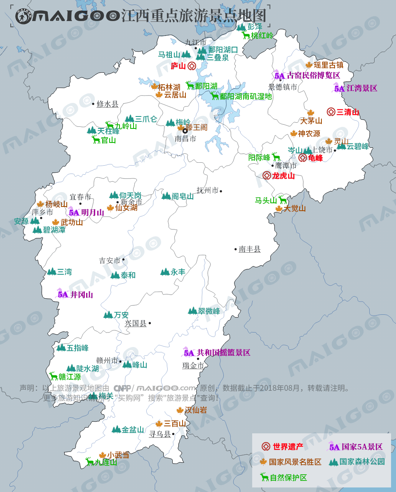

| | | | | |
| - | - | - | - | - |
|<b>别名</b>|江右、赣鄱大地、江南西道||<b>著名景点</b>|庐山、井冈山、龙虎山、三清山、江湾、景德镇古窑民俗博览区等|
|<b>行政区类别</b>|省||<b>机 场</b>|南昌昌北国际机场、赣州黄金机场等|
|<b>所属地区</b>|中国华东||<b>火车站</b>|南昌站、南昌西站、赣州站、鹰潭站等|
|<b>下辖地区</b>|11个设区的市、24个市辖区、11个不设区的市（县级）、65个县||<b>车牌代码</b>|赣A—赣T|
|<b>电话区号</b>|（+86）0791-0799||<b>GDP</b>|20818.5亿元（2017年）|
|<b>邮政区码</b>|330000-344000||<b>人均GDP</b>|45187元（2017年）|
|<b>地理位置</b>|中国东南部、长江中下游||<b>省 花</b>|杜鹃|
|<b>面 积</b>|16.69万平方公里||<b>省 树</b>|樟树|
|<b>人 口</b>|4622.1万人（2017年常住人口） [2] ||<b>最高山峰</b>|黄岗山（2157.8米）|
|<b>方 言</b>|赣语、客家语、江淮官话、吴语、徽语等||<b>最大平原</b>|鄱阳湖平原|
|<b>气候条件</b>|亚热带季风性湿润气候||<b>党委书记</b>|陈全国|
|-|-||<b>主要领导</b>|省委书记：刘奇，代省长：易炼红|
| <b>江西生活文化</b> | <b>江西特色文化</b> | <b>江西曲艺文化</b> | <b>江西建筑文化</b> | <b>江西宗教文化</b> |
| - | - | - | - | - |
| <a href="javascript:;" onclick="live(this);">习俗/民俗</a> | <a href="javascript:;" onclick="feature(this);">全丰花灯</a> | <a href="javascript:;" onclick="art(this);">江西赣剧</a> | <a href="javascript:;" onclick="building(this);">赣派建筑</a> | <a href="javascript:;" onclick="religion(this);">江西宗教/庙宇</a> |
| <a href="javascript:;" onclick="live(this);">方言文化</a> | <a href="javascript:;" onclick="feature(this);">南丰傩舞</a> | <a href="javascript:;" onclick="art(this);">永新小鼓</a> | <a href="javascript:;" onclick="building(this);">赣南客家围屋</a> | - |
| <a href="javascript:;" onclick="live(this);">节日文化</a> | <a href="javascript:;" onclick="feature(this);">兴国山歌</a> | <a href="javascript:;" onclick="art(this);">萍乡春锣</a> | - | - |
| <a href="javascript:;" onclick="live(this);">嫁娶文化</a> | <a href="javascript:;" onclick="feature(this);">景德镇手工制瓷技艺</a> | <a href="javascript:;" onclick="art(this);">赣南采茶戏</a> |-|-|
| <a href="javascript:;" onclick="live(this);">饮食文化</a> | - | -|-|-|
## <i class="fa fa-file-text-o"></i>&nbsp;目录（Table of Contents）
+ [I. 总路线图（暂无）](#one)
+ [II. 景点](#two)
+ [III. 路线规划（暂无）](#three)
<h2 id="two"><i class="fa fa-star-o"></i>&nbsp;景点</h2>
